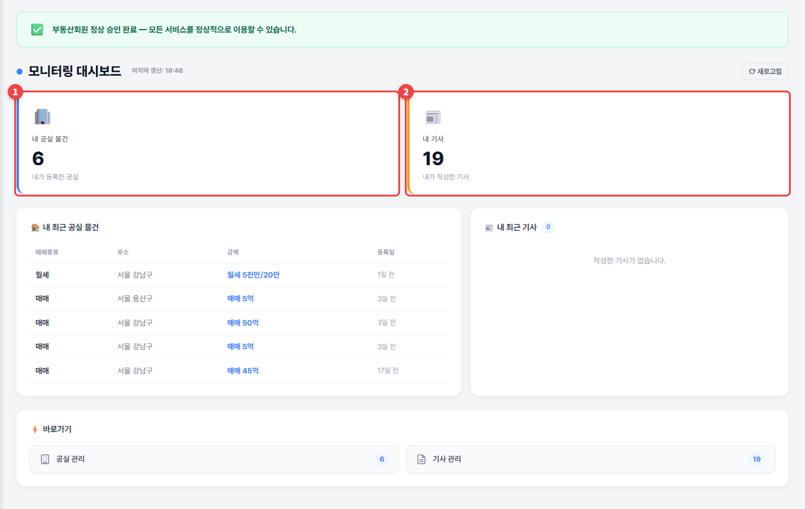
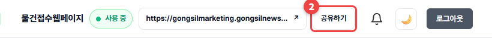

대시보드
관리자페이지에 들어오면 처음 보이는 화면입니다. 내 공실·기사 현황과 승인 상태를 한눈에 봅니다.
1
① 내 공실 물건 ② 내 기사 수가 보이고, 아래에 최근 공실과 최근 기사가 나옵니다. 아래 바로가기로 자주 쓰는 메뉴에 들어가세요.

2
화면 위쪽에는 ① 물건접수웹페이지 사용 상태와 주소, ② 공유하기가 늘 보입니다. 어느 메뉴에서든 바로 주소를 보낼 수 있습니다.

💡 알아두세요숫자가 바뀌지 않으면 오른쪽 위 ⟳ 새로고침을 누르세요.